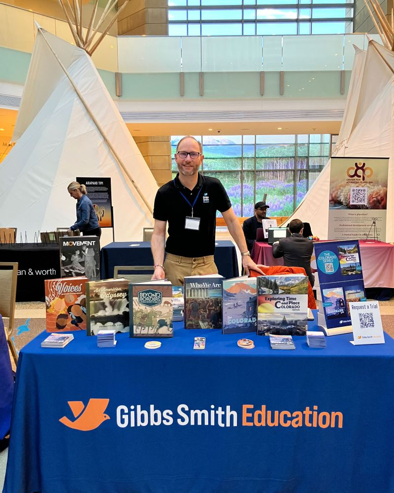
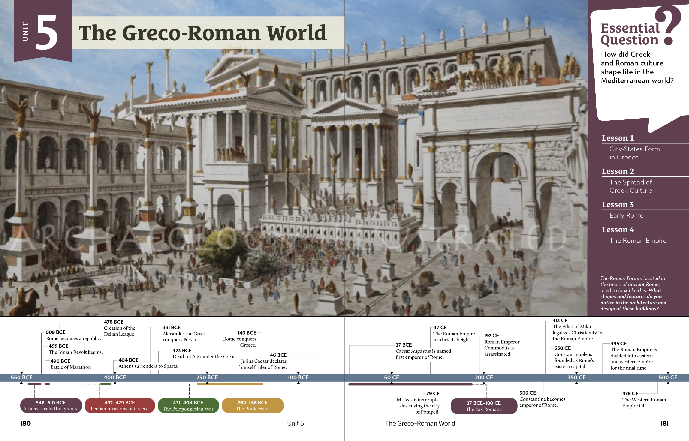
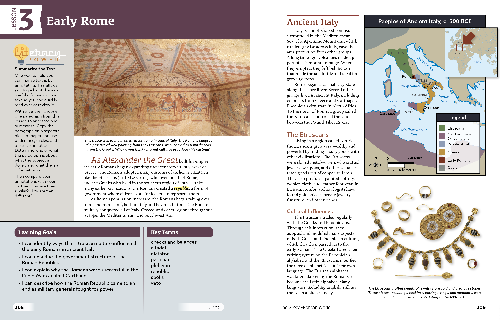
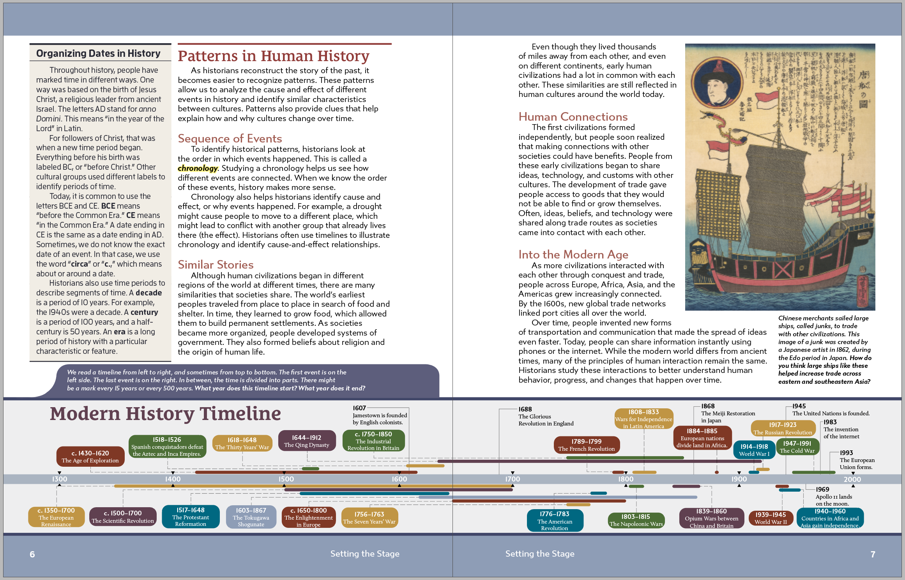
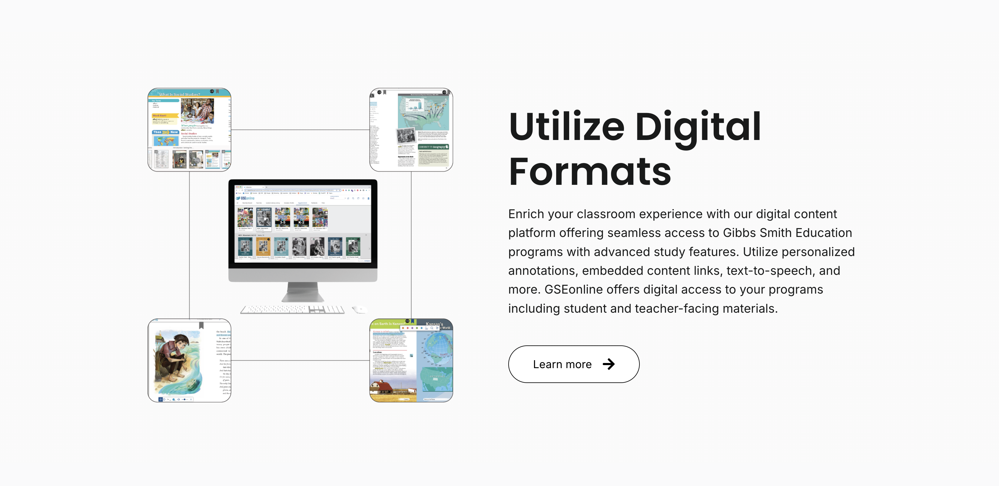
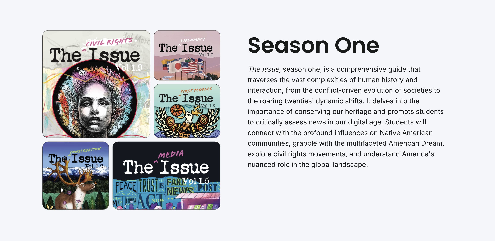
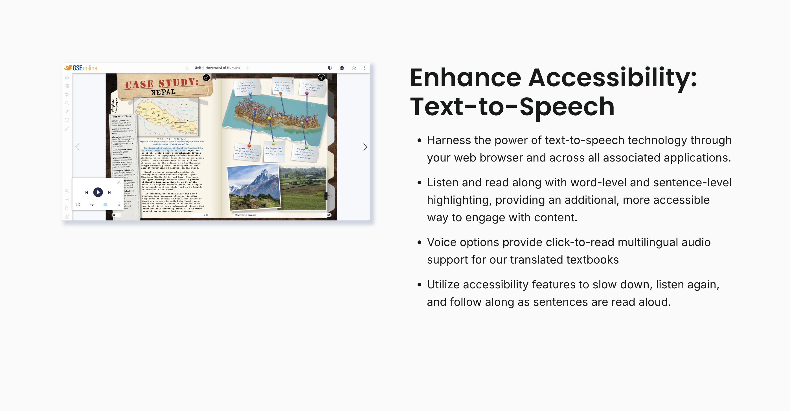
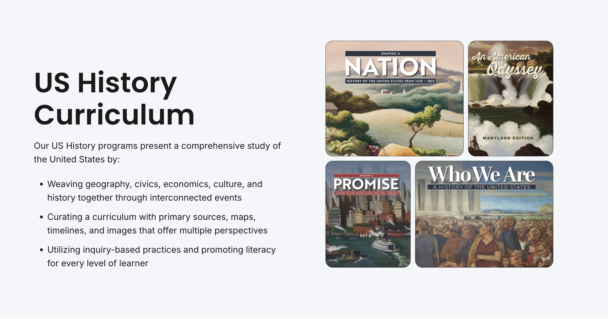

If you want to talk to me about details have I got a project (or six) for you. In my time at Gibbs I worked on six full length history and geography textbooks from start to print. The attention to details required to send projects that large to print is immense. The content in these books is geared for students aged 4th grade - 8th grade.
For each of these books I worked with a team of writers, editors, and curriculum developers. We collaborated closely to ensure the visual design complemented the educational content and appealed to the target age group.
In addition to page layout and mastering paragraph styles, I also designed custom infographics, maps, and illustrations to enhance the learning experience. One of my favorite aspects of the role was colorizing old photos in photoshop. I was responsible for ensuring that all visual elements were not only engaging but also aligned with the educational goals of each textbook.







